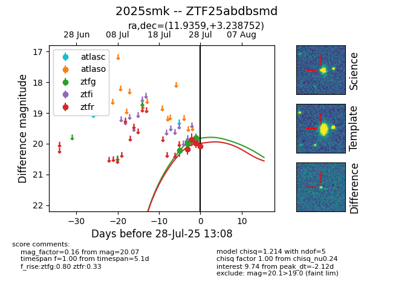

Target 2025smk at 2025-07-28 13:08, see:
FINK: fink-portal.org/2025smk
Lasair: lasair-ztf.lsst.ac.uk/objects/2025smk
ALeRCE: alerce.online/object/2025smk
TNS: wis-tns.org/object/2025smk
YSE: ziggy.ucolick.org/yse/transient_detail/2025smk
alt names
ZTF25abdbsmd (ztf,fink)
2025smk (tns,yse)
coordinates:
equatorial (ra, dec) = (11.9359,+3.23875)
galactic (l, b) = (121.1083,-59.61991)
photometry
last ztfg=19.81, ztfr=20.07
6 ztfg, 4 ztfr detections
